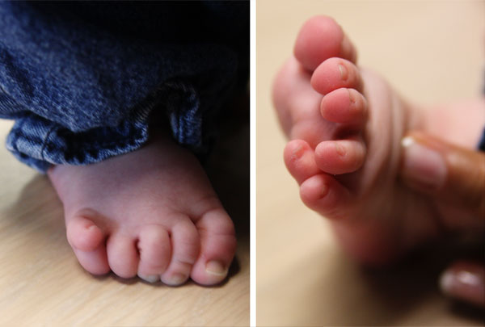
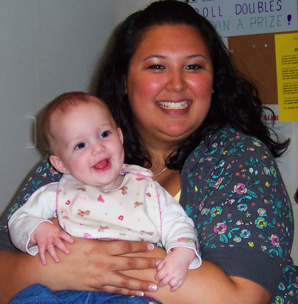

Meet My 12-Toed Baby Niece
When Kristina and I went to California two weeks ago, we got to meet my new niece for the first time. One of the unique things about little Lacey is she was born with an extra toe on each foot, for a total of 12 little piggies. In the medical world this is called hexadactyly and is quite common. Lacey’s older sister was also born with 12 toes.
Sometimes the extra toes can be tied shortly after birth where they simply fall off. Otherwise doctors advise having surgery to remove the extra digit before the crawling stage. Lacey’s is scheduled sometime in June.

Either way, she is still a cute baby.


that sounds scary
Reply